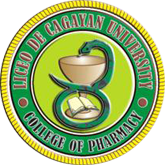
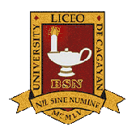
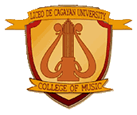

STUDENT ORGANIZATIONS
To channel student activities towards positive endeavors, the school encourages and accredits/recognizes the different organizations/clubs at the beginning of every school year. A class adviser is appointed by the Administration taking into account the experience and training of the faculty member.
STUDENT BODY ORGANIZATIONS
College of Business and Accountancy
(CBA-SBO)
(CBA-SBO)
College of Arts and Sciences
(CAS-SBO)
(CAS-SBO)
College of Teacher Education
(CTE-SBO)
(CTE-SBO)

College of Pharmacy
(COP-SBO)
(COP-SBO)

College of Nursing
(CON-SBO)
(CON-SBO)
College of Criminal Justice
(CTE-SBO)
(CTE-SBO)

College of Rehabilitation Sciences
(CRS-SBO)
(CRS-SBO)
College of Radiologic Technology
(CRT-SBO)
(CRT-SBO)

Conservatory of Music, Theater and Dance
(CMspan-SBO)
(CMspan-SBO)
SUB-ORGANIZATIONS
Association of Political Science Students
Biomorist Society
Communicators, Literati and Performing Arts
English Club
Filipino Club
Folkloric Dance Troupe
Junior Financial Executives
Junior Philippine Institute of Accountants
Liceo Drum and Bugle Corps
LDCU-Red Cross Youth
Liceo Green Advocates
Psyche Sodality
Early Childhood Education Club
Liceo Diplomatique Club
Social Sciences Club
General Education Club
Mathematics Explorers Club
Special Education Club